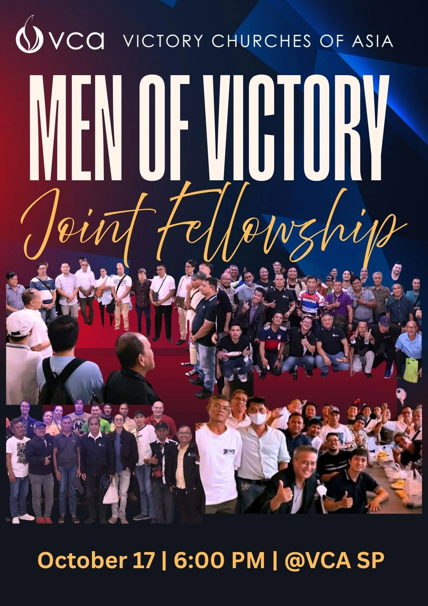
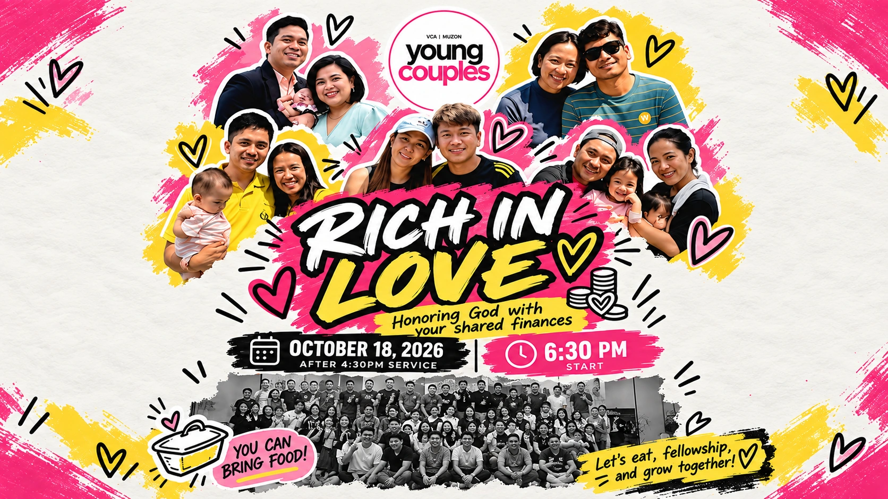
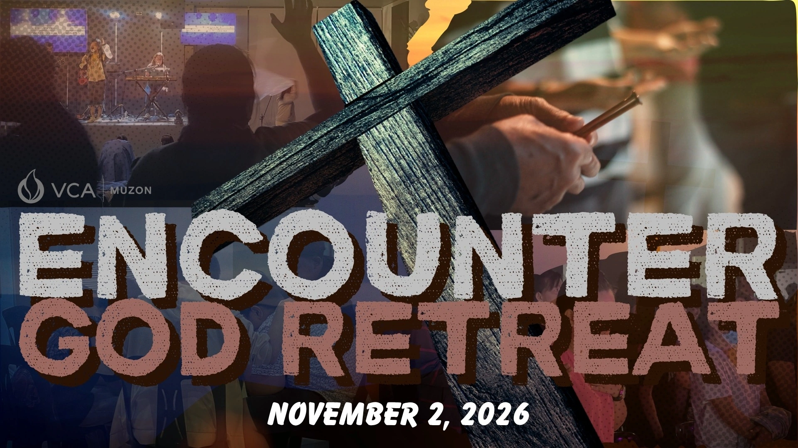

Sat
Men of Victory
Joint Fellowship
- 6:00PM
- VCA Sapang Palay
Upcoming Events
Join us for special gatherings, celebrations, and opportunities to grow together in faith.

Sat
Joint Fellowship

Sun
RICH IN LOVE: Honoring God with Your Shared Finances
Young Couples, tara! 👫❤️ Let’s come together for a night of fellowship, food, and growing together in Christ.
Let’s eat, fellowship, and grow together!

Mon
Step away from the noise, draw closer to God, and experience a day of worship, reflection, and renewal at the Encounter God Retreat.
Nov 6–7 Fri–Sat
For every Young Adult figuring out life, purpose, faith, and everything in between, Kingdom Gen is for you. Come away with clarity on who you are, where you belong, what you carry, and what you can contribute.
Register via your YA church coordinators.
Whether you are joining a worship service, special event, or fellowship gathering, there is a place for you at VCA Muzon.